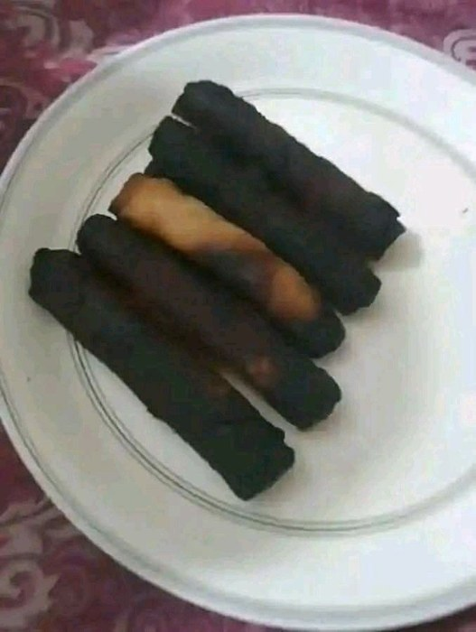

Ingredientes
| Producto | Cantidad |
|---|---|
| jamón picado | 100 g |
| harina | 80 g |
| mantequilla | 80 g |
| leche | 700 ml |
| huevo | 1 |
| pan rallado | 100 g |
| aceite para freír | al gusto |

Elaboración
- Derrite la mantequilla, añade la harina y tuéstala un minuto.
- Incorpora la leche poco a poco removiendo hasta obtener una bechamel espesa.
- Añade el jamón y deja enfriar la masa en la nevera.
- Forma las croquetas, pásalas por huevo y pan rallado.
- Fríelas en aceite bien caliente y escúrrelas sobre papel de cocina.